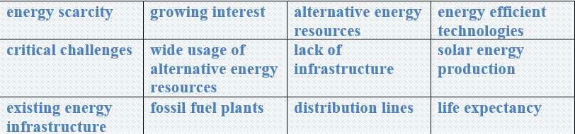

History of hydropower
Hydropower is one of the oldest sources of energy for producing mechanical and electrical energy. Hydropower was used thousands of years ago to turn paddle wheels to help grind grain.
People have a long history of using the force of water flowing in streams and rivers to produce mechanical energy. Hydropower was one of the first sources of energy used for electricity generation and is usually the largest single renewable energy source of annual electricity generation in the United States.
Understanding the water cycle is important to understanding hydropower. The water cycle has three steps:
üî∏Solar energy heats water on the surface of rivers, lakes, and oceans, which causes the water to evaporate.
üî∏Water vapor condenses into clouds and falls as precipitation‚Äîrain and snow.
üî∏Precipitation collects in streams and rivers, which empty into oceans and lakes, where it evaporates and begins the cycle again.
The amount of precipitation that drains into rivers and streams in a geographic area determines the amount of water available for producing hydropower. Seasonal and long-term changes in rain and snowfall, such as droughts, have a big effect on hydropower production.
Hydroelectric power is produced with moving water
Because the source of hydroelectric power is water, hydroelectric power plants are usually located on or near a water source. The volume of the water flow and the change in elevation (or fall) from one point to another determine the amount of available energy in moving water. In general, the greater the water flow and the higher the fall, the more electricity a hydropower plant can produce.
Task1 Vocabulary
Match the words to make phrases in the text.
Task2 Reading
Read the text and answer the given questions.
üî∏Why was hydropower used to turn paddle wheels?
üî∏What is the largest single renewable energy source of annual
üî∏electricity in USA?
üî∏What is important to understand hydropower?
üî∏What causes the water to evaporate?
üî∏What does water vapor condense into?
üî∏Into what form does the water vapor fall?
üî∏Where does precipitation collect?
üî∏What can have a big effect on hydropower?
üî∏On what places are hydropower power stations located?
üî∏On what does the volume of electricity depend?
Task4 Listening
Listen and complete the sentences with theword you hear.
1 I have a new __________.
2 Those __________ are very tall.
3 I wrote you a __________.
4 Can I __________ here?
5 I like to __________.
Task5 Writing
✔️ Learn the given lexical units.
✔️ Work in groups and explain the meanings of the given lexical units.
✔️ Try to use them in sentences.

Read the case and give some solutions
As the demand for energy is growing day by day over the world, the energy scarcity is happening. Today there is a growing interest for alternative energy resources and energy efficient technologies around the world.
One of the critical challenges that hinder the wide usage of alternative energy resources is the lack of infrastructure. This is a huge barrier towards wind and solar energy production, since the existing energy infrastructure needs urgent transformation. Present infrastructure is mainly built for fossil fuel plants and nuclear plants. The main problem with the power grid is its age. Most electric transmission and distribution lines were constructed during the 1950s and 1960s. There is already 50-year life expectancy for electric transmission and distribution. Therefore, making them competitive to meet the demand of the hour and the severe climatic changes is important.
Suggest some ways to build new infrastructure and make them incompetent to severe climatic changes and passing time.
What does “alternative energy” mean?
What is the problem with the usage of waste removal?
How serious is this situation?
What is the cause of this problem?
How it is successfully solved?
What is the most optimal solution?
Can present some tips on improving the situation?